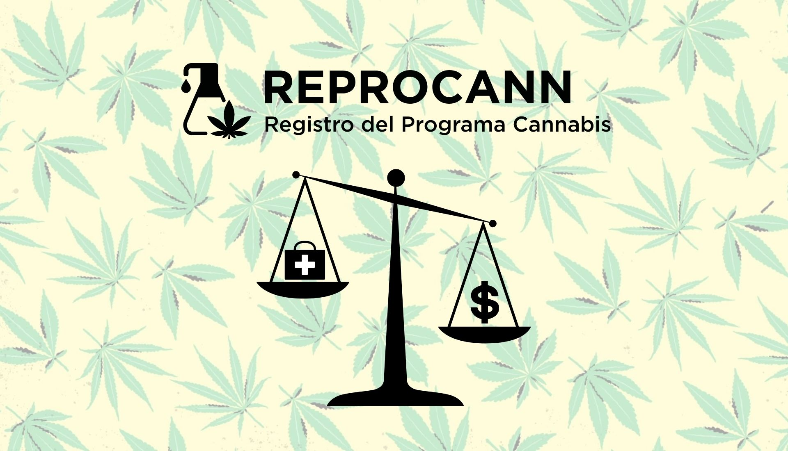

La marihuana medicinal es un término que designa a los derivados de la planta Cannabis sativa que se usan para aliviar los síntomas causados por determinadas afecciones médicas. La marihuana medicinal también se conoce como cannabis medicinal. La Cannabis sativa contiene muchos compuestos activos.

Acceso exclusivo para pacientes que necesiten solicitar autorización al cultivo controlado con fines medicinales y/o terapeuticos, personas o entidades que necesiten cultivar para un tercero y para profesionales de la salud que necesiten certificar a sus pacientes.
